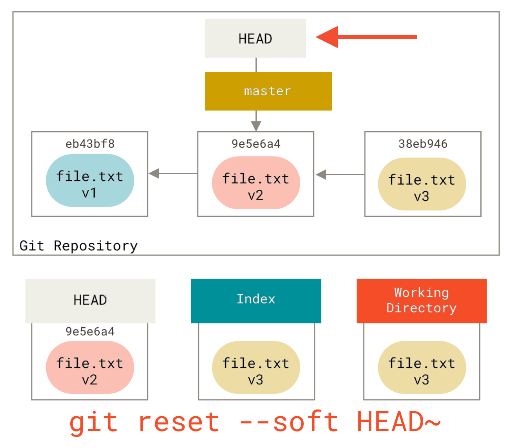
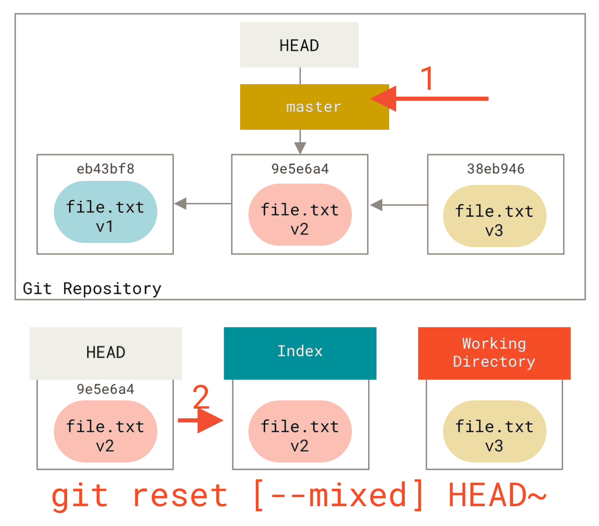

<!DOCTYPE html>
<html xmlns="http://www.w3.org/1999/xhtml" lang="" xml:lang="">
    <head>
        <meta charset="utf-8" />
        <meta name="generator" content="markdown-it" />
        <meta name="viewport" content="width=device-width, initial-scale=1.0, user-scalable=yes" />
        <meta name="author" content="runner" />
        <meta name="dcterms.date" content="2025-04-08 13:44:52.253" />
        <title>git_reset</title>
        <style type="text/css">
            code {
                white-space: pre-wrap;
            }
            span.smallcaps {
                font-variant: small-caps;
            }
            span.underline {
                text-decoration: underline;
            }
            div.column {
                display: inline-block;
                vertical-align: top;
                width: 50%;
            }
        </style>
        <style type="text/css">
            a.sourceLine {
                display: inline-block;
                line-height: 1.25;
            }
            a.sourceLine {
                pointer-events: none;
                color: inherit;
                text-decoration: inherit;
            }
            a.sourceLine:empty {
                height: 1.2em;
            }
            .sourceCode {
                overflow: visible;
            }
            code.sourceCode {
                white-space: pre;
                position: relative;
            }
            div.sourceCode {
                margin: 1em 0;
            }
            pre.sourceCode {
                margin: 0;
            }
            @media screen {
                div.sourceCode {
                    overflow: auto;
                }
            }
            @media print {
                code.sourceCode {
                    white-space: pre-wrap;
                }
                a.sourceLine {
                    text-indent: -1em;
                    padding-left: 1em;
                }
            }
            pre.numberSource a.sourceLine {
                position: relative;
                left: -4em;
            }
            pre.numberSource a.sourceLine::before {
                content: attr(title);
                position: relative;
                left: -1em;
                text-align: right;
                vertical-align: baseline;
                border: none;
                pointer-events: all;
                display: inline-block;
                -webkit-touch-callout: none;
                -webkit-user-select: none;
                -khtml-user-select: none;
                -moz-user-select: none;
                -ms-user-select: none;
                user-select: none;
                padding: 0 4px;
                width: 4em;
                background-color: #ffffff;
                color: #a0a0a0;
            }
            pre.numberSource {
                margin-left: 3em;
                border-left: 1px solid #a0a0a0;
                padding-left: 4px;
            }
            div.sourceCode {
                color: #1f1c1b;
                background-color: #ffffff;
            }
            @media screen {
                a.sourceLine::before {
                    text-decoration: underline;
                }
            }
            code span {
                color: #1f1c1b;
            } /* Normal */
            code span.al {
                color: #bf0303;
                background-color: #f7e6e6;
                font-weight: bold;
            } /* Alert */
            code span.an {
                color: #ca60ca;
            } /* Annotation */
            code span.at {
                color: #0057ae;
            } /* Attribute */
            code span.bn {
                color: #b08000;
            } /* BaseN */
            code span.bu {
                color: #644a9b;
                font-weight: bold;
            } /* BuiltIn */
            code span.cf {
                color: #1f1c1b;
                font-weight: bold;
            } /* ControlFlow */
            code span.ch {
                color: #924c9d;
            } /* Char */
            code span.cn {
                color: #aa5500;
            } /* Constant */
            code span.co {
                color: #898887;
            } /* Comment */
            code span.cv {
                color: #0095ff;
            } /* CommentVar */
            code span.do {
                color: #607880;
            } /* Documentation */
            code span.dt {
                color: #0057ae;
            } /* DataType */
            code span.dv {
                color: #b08000;
            } /* DecVal */
            code span.er {
                color: #bf0303;
                text-decoration: underline;
            } /* Error */
            code span.ex {
                color: #0095ff;
                font-weight: bold;
            } /* Extension */
            code span.fl {
                color: #b08000;
            } /* Float */
            code span.fu {
                color: #644a9b;
            } /* Function */
            code span.im {
                color: #ff5500;
            } /* Import */
            code span.in {
                color: #b08000;
            } /* Information */
            code span.kw {
                color: #1f1c1b;
                font-weight: bold;
            } /* Keyword */
            code span.op {
                color: #1f1c1b;
            } /* Operator */
            code span.ot {
                color: #006e28;
            } /* Other */
            code span.pp {
                color: #006e28;
            } /* Preprocessor */
            code span.re {
                color: #0057ae;
                background-color: #e0e9f8;
            } /* RegionMarker */
            code span.sc {
                color: #3daee9;
            } /* SpecialChar */
            code span.ss {
                color: #ff5500;
            } /* SpecialString */
            code span.st {
                color: #bf0303;
            } /* String */
            code span.va {
                color: #0057ae;
            } /* Variable */
            code span.vs {
                color: #bf0303;
            } /* VerbatimString */
            code span.wa {
                color: #bf0303;
            } /* Warning */
        </style>
        <!--
  Firefox non carica font da locale quindi il font può non essere visibile
  quando di carica la pagina da locale.
  Bisogna impostare about:config
    security.fileuri.strict_origin_policy = false
  -->
        <link rel="stylesheet" href="../../inc/css/katex.min.css" />
        <link rel="stylesheet" href="../../inc/css/fonts/google_fonts.css" />
        <!-- <link href="https://cdn.jsdelivr.net/npm/bootstrap@5.3.0-alpha1/dist/css/bootstrap.min.css" rel="stylesheet" integrity="sha384-GLhlTQ8iRABdZLl6O3oVMWSktQOp6b7In1Zl3/Jr59b6EGGoI1aFkw7cmDA6j6gD" crossorigin="anonymous"> -->
        <link rel="stylesheet" href="../../inc/css/bootstrap.min.css" />
        <link rel="stylesheet" href="../../inc/css/cdp.css" />
        <!--[if lt IE 9]>
            <script src="//cdnjs.cloudflare.com/ajax/libs/html5shiv/3.7.3/html5shiv-printshiv.min.js"></script>
        <![endif]-->
        <meta name="keywords" content="Appunti,Note" />
        <meta name="description" content="Appunti di runner" />
        <link rel="icon" type="image/x-icon" href="../../inc/img/favicon.ico" />
        <link rel="shortcut icon" type="image/x-icon" href="../../inc/img/favicon.ico" />

        <link rel="stylesheet" href="../../inc/js/hljs/styles/default.css" />
        <script src="../../inc/js/hljs/lib/highlight.js"></script>
        <script src="../../inc/js/bootstrap/bootstrap.bundle.min.js"></script>
        <!-- <script src="https://cdn.jsdelivr.net/npm/bootstrap@5.3.0-alpha1/dist/js/bootstrap.bundle.min.js" integrity="sha384-w76AqPfDkMBDXo30jS1Sgez6pr3x5MlQ1ZAGC+nuZB+EYdgRZgiwxhTBTkF7CXvN" crossorigin="anonymous"></script> -->
        <script>
            hljs.initHighlightingOnLoad();
        </script>
        <script type="module">
            import mermaid from '../../inc/js/mermaid/dist/mermaid.esm.min.mjs';
            // import mermaid from 'https://cdn.jsdelivr.net/npm/mermaid@10/dist/mermaid.esm.min.mjs';
            mermaid.initialize({ startOnLoad: true });
        </script>
    </head>
    <body></body>
</html>
<h1 id="git_reset" tabindex="-1">git_reset <a class="header-anchor" href="#git_reset" aria-hidden="true">🔗</a></h1>
<p class="code">2025-04-08 13:44:52.253</p>
<nav class="table-of-contents"><ol><li><a href="#the-three-trees">The Three Trees </a><ol><li><a href="#the-head">The HEAD </a></li><li><a href="#the-index">The Index </a></li><li><a href="#the-working-directory">The Working Directory </a></li></ol></li><li><a href="#the-workflow">The Workflow </a></li><li><a href="#the-role-of-reset">The Role of Reset </a><ol><li><a href="#step-1%3A-move-head">Step 1: Move HEAD </a></li><li><a href="#step-2%3A-updating-the-index-(--mixed)">Step 2: Updating the Index (--mixed) </a></li><li><a href="#step-3%3A-updating-the-working-directory-(--hard)">Step 3: Updating the Working Directory (--hard) </a></li><li><a href="#recap">Recap </a></li></ol></li><li><a href="#reset-with-a-path">Reset With a Path </a></li><li><a href="#squashing">Squashing </a></li><li><a href="#check-it-out">Check It Out </a><ol><li><a href="#without-paths">Without Paths </a></li><li><a href="#with-paths">With Paths </a></li></ol></li><li><a href="#summary">Summary </a></li><li><a href="#examples">Examples </a><ol><li><a href="#undo-add">Undo add </a></li><li><a href="#undo-a-commit-and-redo">Undo a commit and redo </a></li><li><a href="#undo-commits%2C-making-it-a-topic-branch">Undo commits, making it a topic branch </a></li><li><a href="#undo-commits-permanently">Undo commits permanently </a></li><li><a href="#undo-a-merge-or-pull">Undo a merge or pull </a></li><li><a href="#undo-a-merge-or-pull-inside-a-dirty-working-tree">Undo a merge or pull inside a dirty working tree </a></li><li><a href="#interrupted-workflow">Interrupted workflow </a></li><li><a href="#reset-a-single-file-in-the-index">Reset a single file in the index </a></li></ol></li></ol></nav><h1 id="reset-demystified" tabindex="-1">Reset Demystified <a class="header-anchor" href="#reset-demystified" aria-hidden="true">🔗</a></h1>
<ul>
<li>
<p><a href="https://git-scm.com/book/en/v2/Git-Tools-Reset-Demystified">https://git-scm.com/book/en/v2/Git-Tools-Reset-Demystified</a></p>
</li>
<li>
<p><a href="https://git-scm.com/book/en/v2/Git-Basics-Undoing-Things">https://git-scm.com/book/en/v2/Git-Basics-Undoing-Things</a></p>
</li>
<li>
<p><a href="https://git-scm.com/book/en/v2/Git-Tools-Rewriting-History">https://git-scm.com/book/en/v2/Git-Tools-Rewriting-History</a></p>
</li>
<li>
<p><a href="https://git-scm.com/docs/git-reset">https://git-scm.com/docs/git-reset</a></p>
</li>
<li>
<p><a href="https://git-scm.com/docs/git-ls-files">https://git-scm.com/docs/git-ls-files</a></p>
</li>
<li>
<p><a href="https://github.com/progit/progit2/blob/main/book/07-git-tools/sections/reset.asc">https://github.com/progit/progit2/blob/main/book/07-git-tools/sections/reset.asc</a></p>
</li>
<li>
<p><a href="./git_stash.html">Git Stash</a></p>
</li>
<li>
<p><a href="./git_undoing_things.html">Git Undoing Things</a></p>
</li>
</ul>
<p><a href="https://github.com/orgs/community/discussions/68224">How do different types of Git reset differ?</a></p>
<table class="table"><thead>
<tr>
<th>Command</th>
<th>Undos</th>
<th>Comment</th>
</tr>
</thead>
<tbody>
<tr>
<td><strong><code>git reset --hard</code></strong></td>
<td><code>git commit</code>, <code>git add</code>, <code>working dir</code></td>
<td>Elimina le modifiche nella working dir</td>
</tr>
<tr>
<td><strong><code>git reset</code></strong>, <strong><code>git reset --mixed</code></strong></td>
<td><code>git commit</code>, <code>git add</code></td>
<td>Non resetta la working dir</td>
</tr>
<tr>
<td><strong><code>git reset --soft</code></strong></td>
<td><code>git commit</code></td>
<td>Non resetta la working dir</td>
</tr>
</tbody>
</table>
<p>Git <code>reset</code> and <code>checkout</code> commands.
These commands are two of the most confusing parts of Git when you first encounter them.
They do so many things that it seems hopeless to actually understand them and employ them properly.
For this, we recommend a simple metaphor.</p>
<ul>
<li><code>git commit</code> : Moves the <strong>HEAD</strong> <mark>and the <strong>branch</strong></mark> <em>forward</em> to the newly created commit</li>
<li><code>git checkout</code> <em>&lt;commit or branch&gt;</em>: Moves the <strong>HEAD</strong> to the commit <mark>without moving the branch</mark></li>
<li><code>git reset</code>  <em>&lt;commit or branch&gt;</em>*_: Moves the <strong>HEAD</strong> <mark>and the <strong>branch</strong></mark> to the commit</li>
</ul>
<h2 id="the-three-trees" tabindex="-1">The Three Trees <a class="header-anchor" href="#the-three-trees" aria-hidden="true">🔗</a></h2>
<p>An easier way to think about <code>reset</code> and <code>checkout</code> is through the mental frame of Git being a content manager of three different trees.
By &quot;<code>tree</code>&quot; here, we really mean &quot;<code>collection of files</code>&quot;, not specifically the data structure.
There are a few cases where the index doesn't exactly act like a tree, but for our purposes it is easier to think about it this way for now.</p>
<p>Git as a system manages and manipulates three trees in its normal operation:</p>
<table class="table"><thead>
<tr>
<th>Tree</th>
<th>Role</th>
</tr>
</thead>
<tbody>
<tr>
<td><strong>HEAD</strong></td>
<td>Last commit snapshot, next parent</td>
</tr>
<tr>
<td><strong>Index</strong></td>
<td>Proposed next commit snapshot</td>
</tr>
<tr>
<td><strong>Working Directory</strong></td>
<td>Sandbox</td>
</tr>
</tbody>
</table>
<h3 id="the-head" tabindex="-1">The HEAD <a class="header-anchor" href="#the-head" aria-hidden="true">🔗</a></h3>
<ul>
<li><a href="https://git-scm.com/docs/git-cat-file#Documentation/git-cat-file.txt--p">https://git-scm.com/docs/git-cat-file#Documentation/git-cat-file.txt--p</a></li>
<li><a href="https://git-scm.com/docs/git-ls-tree#Documentation/git-ls-tree.txt--r">https://git-scm.com/docs/git-ls-tree#Documentation/git-ls-tree.txt--r</a></li>
</ul>
<p>HEAD is the pointer to the current branch reference, which is in turn a pointer to the last commit made on that branch.
That means HEAD will be the parent of the next commit that is created.
It's generally simplest to think of HEAD as the snapshot of <strong>your last commit on that branch</strong>.</p>
<p>In fact, it's pretty easy to see what that snapshot looks like.
Here is an example of getting the actual directory listing and SHA-1 checksums for each file in the HEAD snapshot:</p>
<pre><code class="language-bash">$ git cat-file -p HEAD
tree cfda3bf379e4f8dba8717dee55aab78aef7f4daf
author Scott Chacon  1301511835 -0700
committer Scott Chacon  1301511835 -0700

initial commit

$ git ls-tree -r HEAD
100644 blob a906cb2a4a904a152...   README
100644 blob 8f94139338f9404f2...   Rakefile
040000 tree 99f1a6d12cb4b6f19...   lib
</code></pre>
<p>The Git <code>cat-file</code> and <code>ls-tree</code> commands are &quot;<code>plumbing</code>&quot; commands that are used for lower level things and not really used in day-to-day work, but they help us see what's going on here.</p>
<h3 id="the-index" tabindex="-1">The Index <a class="header-anchor" href="#the-index" aria-hidden="true">🔗</a></h3>
<ul>
<li><a href="https://git-scm.com/docs/git-ls-files">https://git-scm.com/docs/git-ls-files</a></li>
<li><a href="https://git-scm.com/docs/gitglossary#Documentation/gitglossary.txt-aiddefindexaindex">https://git-scm.com/docs/gitglossary#Documentation/gitglossary.txt-aiddefindexaindex</a></li>
<li><a href="https://git-scm.com/docs/index-format">https://git-scm.com/docs/index-format</a></li>
<li><a href="https://stackoverflow.com/questions/4084921/what-does-the-git-index-contain-exactly">https://stackoverflow.com/questions/4084921/what-does-the-git-index-contain-exactly</a></li>
<li><a href="https://stackoverflow.com/questions/42777685/does-the-index-become-empty-or-match-the-tracked-files-of-the-newly-pointed-comm">https://stackoverflow.com/questions/42777685/does-the-index-become-empty-or-match-the-tracked-files-of-the-newly-pointed-comm</a>
<ul>
<li><a href="https://stackoverflow.com/questions/10913621/why-does-file-stay-in-index-after-commit">https://stackoverflow.com/questions/10913621/why-does-file-stay-in-index-after-commit</a>
Dopo il <strong>commit</strong> l'index <strong>non</strong> viene toccato ovvero <strong>i file committati non vengono cancellati dall'Index</strong></li>
</ul>
</li>
</ul>
<p>The <em>index</em> is your <strong>proposed next commit</strong>.
We've also been referring to this concept as Git's &quot;<code>Staging Area</code>&quot; as this is what Git looks at when you run <code>git commit</code>.</p>
<p><mark>Git populates this index with a list of all the file contents that were last checked out into your working directory and what they looked like when they were originally checked out.
You then replace some of those files with new versions of them, and <code>git commit</code> converts that into the tree for a new commit.</mark></p>
<ul>
<li>When you run <code>git add</code>, the files from your working directory are hashed and stored as objects in the index, leading them to be <em>“staged changes”</em>.</li>
<li>When you run <code>git commit</code>, the staged changes as stored in the index are used to create that new commit. <strong>Dopo il commit l'index non viene toccato ovvero i file committati non vengono cancellati dall'Index</strong>.</li>
<li>When you run <code>git checkout</code>, Git takes the data from a commit and writes it to the working directory <strong>and the Index</strong>.
<strong>Con il checkout i files vengono inseriti anche nell'Index.</strong></li>
</ul>
<p>Per vedere il contenuto dell'index:</p>
<pre><code class="language-bash">$ git ls-files -s
100644 a906cb2a4a904a152e80877d4088654daad0c859 0 README
100644 8f94139338f9404f26296befa88755fc2598c289 0 Rakefile
100644 47c6340d6459e05787f644c2447d2595f5d3a54b 0 lib/simplegit.rb
</code></pre>
<p>Again, here we're using <code>git ls-files</code>, which is more of a behind the scenes command that shows you what your index currently looks like.</p>
<p>The index is not technically a tree structure -- it's actually implemented as a flattened manifest -- but for our purposes it's close enough.</p>
<h3 id="the-working-directory" tabindex="-1">The Working Directory <a class="header-anchor" href="#the-working-directory" aria-hidden="true">🔗</a></h3>
<p>Finally, you have your <em>working directory</em> (also commonly referred to as the &quot;<code>working tree</code>&quot;).
The other two trees store their content in an efficient but inconvenient manner, inside the <code>.git</code> folder.
The working directory unpacks them into actual files, which makes it much easier for you to edit them.
Think of the working directory as a <strong>sandbox</strong>, where you can try changes out before committing them to your staging area (index) and then to history.</p>
<pre><code class="language-bash">$ tree
.
├── README
├── Rakefile
└── lib
    └── simplegit.rb

1 directory, 3 files
</code></pre>
<h2 id="the-workflow" tabindex="-1">The Workflow <a class="header-anchor" href="#the-workflow" aria-hidden="true">🔗</a></h2>
<p>Git's typical workflow is to record snapshots of your project in successively better states, by manipulating these three trees.</p>
<p></p>
<p>Let's visualize this process: say you go into a new directory with a single file in it.
We'll call this <strong>v1</strong> of the file, and we'll indicate it in blue.
Now we run <code>git init</code>, which will create a Git repository with a HEAD reference which points to the unborn <code>master</code> branch.</p>
<p></p>
<p>At this point, only the working directory tree has any content.</p>
<p>Now we want to commit this file, so we use <code>git add</code> to take content in the working directory and copy it to the index.</p>
<p></p>
<p>Then we run <code>git commit</code>, which takes the contents of the index and saves it as a permanent snapshot, creates a commit object which points to that snapshot, and updates <code>master</code> to point to that commit.</p>
<p></p>
<p>If we run <code>git status</code>, we'll see no changes, because all three trees are the same.</p>
<p>Now we want to make a change to that file and commit it.
We'll go through the same process; first, we change the file in our working directory.
Let's call this <strong>v2</strong> of the file, and indicate it in red.</p>
<p></p>
<p>If we run <code>git status</code> right now, we'll see the file in red as &quot;<code>Changes not staged for commit</code>&quot;, because that entry differs between the index and the working directory.
Next we run <code>git add</code> on it to stage it into our index.</p>
<p></p>
<p>At this point, if we run <code>git status</code>, we will see the file in green under &quot;<code>Changes to be committed</code>&quot; because the index and HEAD differ -- that is, our proposed next commit is now different from our last commit.
Finally, we run <code>git commit</code> to finalize the commit.</p>
<p></p>
<p>Now <code>git status</code> will give us no output, because all three trees are the same again.</p>
<p>Switching branches or cloning goes through a similar process.
When you checkout a branch, it changes <strong>HEAD</strong> to point to the new branch ref, populates your <strong>index</strong> with the snapshot of that commit, then copies the contents of the <strong>index</strong> into your <strong>working directory</strong>.</p>
<h2 id="the-role-of-reset" tabindex="-1">The Role of Reset <a class="header-anchor" href="#the-role-of-reset" aria-hidden="true">🔗</a></h2>
<p>The <code>reset</code> command makes more sense when viewed in this context.</p>
<p>For the purposes of these examples, let's say that we've modified <code>file.txt</code> again and committed it a third time.
So now our history looks like this:</p>
<p></p>
<p>Let's now walk through exactly what <code>reset</code> does when you call it.
It directly manipulates these three trees in a simple and predictable way.
It does up to three basic operations.</p>
<h3 id="step-1%3A-move-head" tabindex="-1">Step 1: Move HEAD <a class="header-anchor" href="#step-1%3A-move-head" aria-hidden="true">🔗</a></h3>
<p>The first thing <code>reset</code> will do is move what HEAD points to.
This isn't the same as changing HEAD itself (which is what <code>checkout</code> does); <code>reset</code> moves the branch that HEAD is pointing to.
This means if HEAD is set to the <code>master</code> branch (i.e. you're currently on the <code>master</code> branch), running <code>git reset 9e5e6a4</code> will start by making <code>master</code> point to <code>9e5e6a4</code>.</p>
<p></p>
<p>No matter what form of <code>reset</code> with a commit you invoke, this is the first thing it will always try to do.
With <code>reset --soft</code>, it will simply stop there.</p>
<p>Now take a second to look at that diagram and realize what happened: it essentially undid the last <code>git commit</code> command.
When you run <code>git commit</code>, Git creates a new commit and moves the branch that HEAD points to up to it.
When you <code>reset</code> back to <code>HEAD~</code> (the parent of HEAD), you are moving the branch back to where it was, without changing the index or working directory.
You could now update the index and run <code>git commit</code> again to accomplish what <code>git commit --amend</code> would have done (see <a href="https://git-scm.com/book/en/v2/ch00/_git_amend">Changing the last commit</a>).</p>
<p>Per vedere le references locali ai commit precedenti:</p>
<pre><code class="language-bash">$ git reflog <span class="hljs-comment"># serve a trovare il commit antecedente al primo commit effettuato sul nuovo ramo</span>
<span class="hljs-comment"># Oppure:</span>
$ git <span class="hljs-built_in">log</span> -g
</code></pre>
<p>Si possono utilizzare le references ritornate da questi comandi per indicare il commit al quale tornare con <code>git reset --soft</code>
<a href="./git_revisions_references.html#git-tools---revision-selection"><code>git reflog</code> e <code>git log -g</code></a></p>
<h3 id="step-2%3A-updating-the-index-(--mixed)" tabindex="-1">Step 2: Updating the Index (<code>--mixed</code>) <a class="header-anchor" href="#step-2%3A-updating-the-index-(--mixed)" aria-hidden="true">🔗</a></h3>
<p>Note that if you run <code>git status</code> now you'll see in green the difference between the index and what the new HEAD is.</p>
<p>The next thing <code>reset</code> will do is to update the index with the contents of whatever snapshot HEAD now points to.</p>
<p></p>
<p>If you specify the <code>--mixed</code> option, <code>reset</code> will stop at this point.
This is also the default, so if you specify no option at all (just <code>git reset HEAD~</code> in this case), this is where the command will stop.</p>
<p>Now take another second to look at that diagram and realize what happened: it still undid your last <code>commit</code>, but also <em>unstaged</em> everything.
You rolled back to before you ran all your <code>git add</code> and <code>git commit</code> commands.</p>
<h3 id="step-3%3A-updating-the-working-directory-(--hard)" tabindex="-1">Step 3: Updating the Working Directory (<code>--hard</code>) <a class="header-anchor" href="#step-3%3A-updating-the-working-directory-(--hard)" aria-hidden="true">🔗</a></h3>
<p>The third thing that <code>reset</code> will do is to make the working directory look like the index.
If you use the <code>--hard</code> option, it will continue to this stage.</p>
<p></p>
<p>So let's think about what just happened.
You undid your last commit, the <code>git add</code> and <code>git commit</code> commands, <strong>and</strong> all the work you did in your working directory.</p>
<p>It's important to note that this flag (<code>--hard</code>) is the only way to make the <code>reset</code> command dangerous, and one of the very few cases where Git will actually destroy data.
Any other invocation of <code>reset</code> can be pretty easily undone, but the <code>--hard</code> option cannot, since it forcibly overwrites files in the working directory.
In this particular case, we still have the <strong>v3</strong> version of our file in a commit in our Git DB, and we could get it back by looking at our <code>reflog</code>, but if we had not committed it, Git still would have overwritten the file and it would be unrecoverable.</p>
<h3 id="recap" tabindex="-1">Recap <a class="header-anchor" href="#recap" aria-hidden="true">🔗</a></h3>
<p>The <code>reset</code> command overwrites these three trees in a specific order, stopping when you tell it to:</p>
<ol>
<li>Move the branch HEAD points to <em>(stop here if <code>--soft</code>)</em>.</li>
<li>Make the index look like HEAD <em>(stop here unless <code>--hard</code>)</em>.</li>
<li>Make the working directory look like the index.</li>
</ol>
<h2 id="reset-with-a-path" tabindex="-1">Reset With a Path <a class="header-anchor" href="#reset-with-a-path" aria-hidden="true">🔗</a></h2>
<p>That covers the behavior of <code>reset</code> in its basic form, but you can also provide it with a path to act upon.
If you specify a path, <code>reset</code> will skip step 1, and limit the remainder of its actions to a specific file or set of files.
This actually sort of makes sense -- HEAD is just a pointer, and you can't point to part of one commit and part of another.
But the index and working directory <em>can</em> be partially updated, so reset proceeds with steps 2 and 3.</p>
<p>So, assume we run <code>git reset file.txt</code>.
This form (since you did not specify a commit SHA-1 or branch, and you didn't specify <code>--soft</code> or <code>--hard</code>) is shorthand for <code>git reset --mixed HEAD file.txt</code>, which will:</p>
<ol>
<li>Move the branch HEAD points to <em>(skipped)</em>.</li>
<li>Make the index look like HEAD <em>(stop here)</em>.</li>
</ol>
<p>So it essentially just copies <code>file.txt</code> from HEAD to the index.</p>
<p></p>
<p>This has the practical effect of <em>unstaging</em> the file.
If we look at the diagram for that command and think about what <code>git add</code> does, they are exact opposites.</p>
<p></p>
<p>This is why the output of the <code>git status</code> command suggests that you run this to unstage a file (see <a href="https://git-scm.com/book/en/v2/ch00/_unstaging">Unstaging a staged file</a> for more on this).</p>
<p>We could just as easily not let Git assume we meant &quot;<code>pull the data from HEAD</code>&quot; by specifying a specific commit to pull that file version from.
We would just run something like <code>git reset eb43bf file.txt</code>.</p>
<p></p>
<p>This effectively does the same thing as if we had reverted the content of the file to <strong>v1</strong> in the working directory, ran <code>git add</code> on it, then reverted it back to <strong>v3</strong> again (without actually going through all those steps).
If we run <code>git commit</code> now, it will record a change that reverts that file back to <strong>v1</strong>, even though we never actually had it in our working directory again.</p>
<p>It's also interesting to note that like <code>git add</code>, the <code>reset</code> command will accept a <code>--patch</code> option to unstage content on a hunk-by-hunk basis.
So you can selectively unstage or revert content.</p>
<h2 id="squashing" tabindex="-1">Squashing <a class="header-anchor" href="#squashing" aria-hidden="true">🔗</a></h2>
<p>Let's look at how to do something interesting with this newfound power -- squashing commits.</p>
<p>Say you have a series of commits with messages like &quot;<code>oops.</code>&quot;, &quot;<code>WIP</code>&quot; and &quot;<code>forgot this file</code>&quot;.
You can use <code>reset</code> to quickly and easily squash them into a single commit that makes you look really smart.
<a href="https://git-scm.com/book/en/v2/ch00/_squashing">Squashing Commits</a> shows another way to do this, but in this example it's simpler to use <code>reset</code>.</p>
<p>Let's say you have a project where the first commit has one file, the second commit added a new file and changed the first, and the third commit changed the first file again.
The second commit was a work in progress and you want to squash it down.</p>
<p></p>
<p>You can run <code>git reset --soft HEAD~2</code> to move the HEAD branch back to an older commit (the most recent commit you want to keep):</p>
<p></p>
<p>And then simply run <code>git commit</code> again:</p>
<p></p>
<p>Now you can see that your reachable history, the history you would push, now looks like you had one commit with <code>file-a.txt</code> <strong>v1</strong>, then a second that both modified <code>file-a.txt</code> to <strong>v3</strong> and added <code>file-b.txt</code>.
The commit with the <strong>v2</strong> version of the file is no longer in the history.</p>
<h2 id="check-it-out" tabindex="-1">Check It Out <a class="header-anchor" href="#check-it-out" aria-hidden="true">🔗</a></h2>
<p>Finally, you may wonder what the difference between <code>checkout</code> and <code>reset</code> is.
Like <code>reset</code>, <code>checkout</code> manipulates the three trees, and it is a bit different depending on whether you give the command a file path or not.</p>
<h3 id="without-paths" tabindex="-1">Without Paths <a class="header-anchor" href="#without-paths" aria-hidden="true">🔗</a></h3>
<p>Running <code>git checkout [branch]</code> is pretty similar to running <code>git reset --hard [branch]</code> in that it updates all three trees for you to look like <code>[branch]</code>, but there are two important differences.</p>
<p>First, unlike <code>reset --hard</code>, <code>checkout</code> is working-directory safe; it will check to make sure it's not blowing away files that have changes to them.
Actually, it's a bit smarter than that -- it tries to do a trivial merge in the working directory, so all of the files you <em>haven't</em> changed will be updated.
<code>reset --hard</code>, on the other hand, will simply replace everything across the board without checking.</p>
<p>The second important difference is how <code>checkout</code> updates HEAD.
Whereas <code>reset</code> will move the branch that HEAD points to, <code>checkout</code> will move HEAD itself to point to another branch.</p>
<p>For instance, say we have <code>master</code> and <code>develop</code> branches which point at different commits, and we're currently on <code>develop</code> (so HEAD points to it).
If we run <code>git reset master</code>, <code>develop</code> itself will now point to the same commit that <code>master</code> does.
If we instead run <code>git checkout master</code>, <code>develop</code> does not move, HEAD itself does.
HEAD will now point to <code>master</code>.</p>
<p>So, in both cases we're moving HEAD to point to commit A, but <em>how</em> we do so is very different.
<code>reset</code> will move the branch HEAD points to, <code>checkout</code> moves HEAD itself.</p>
<p></p>
<h3 id="with-paths" tabindex="-1">With Paths <a class="header-anchor" href="#with-paths" aria-hidden="true">🔗</a></h3>
<p>The other way to run <code>checkout</code> is with a file path, which, like <code>reset</code>, does not move HEAD.
It is just like <code>git reset [branch] file</code> in that it updates the index with that file at that commit, but it also overwrites the file in the working directory.
It would be exactly like <code>git reset --hard [branch] file</code> (if <code>reset</code> would let you run that) -- it's not working-directory safe, and it does not move HEAD.</p>
<p>Also, like <code>git reset</code> and <code>git add</code>, <code>checkout</code> will accept a <code>--patch</code> option to allow you to selectively revert file contents on a hunk-by-hunk basis.</p>
<h2 id="summary" tabindex="-1">Summary <a class="header-anchor" href="#summary" aria-hidden="true">🔗</a></h2>
<p>Hopefully now you understand and feel more comfortable with the <code>reset</code> command, but are probably still a little confused about how exactly it differs from <code>checkout</code> and could not possibly remember all the rules of the different invocations.</p>
<p>Here's a cheat-sheet for which commands affect which trees.
The &quot;<code>HEAD</code>&quot; column reads &quot;<code>REF</code>&quot; if that command moves the reference (branch) that HEAD points to, and &quot;<code>HEAD</code>&quot; if it moves HEAD itself.
Pay especial attention to the 'WD Safe?' column -- if it says <strong>NO</strong>, take a second to think before running that command.</p>
<table class="table"><thead>
<tr>
<th></th>
<th>HEAD</th>
<th>Index</th>
<th>Workdir</th>
<th>WD Safe?</th>
</tr>
</thead>
<tbody>
<tr>
<td><strong>Commit Level</strong></td>
<td></td>
<td></td>
<td></td>
<td></td>
</tr>
<tr>
<td><code>reset --soft [commit]</code></td>
<td>REF</td>
<td>NO</td>
<td>NO</td>
<td>YES</td>
</tr>
<tr>
<td><code>reset [commit]</code></td>
<td>REF</td>
<td>YES</td>
<td>NO</td>
<td>YES</td>
</tr>
<tr>
<td><code>reset --hard [commit]</code></td>
<td>REF</td>
<td>YES</td>
<td>YES</td>
<td><strong>NO</strong></td>
</tr>
<tr>
<td><code>checkout &lt;commit&gt;</code></td>
<td>HEAD</td>
<td>YES</td>
<td>YES</td>
<td>YES</td>
</tr>
<tr>
<td><strong>File Level</strong></td>
<td></td>
<td></td>
<td></td>
<td></td>
</tr>
<tr>
<td><code>reset [commit] &lt;paths&gt;</code></td>
<td>NO</td>
<td>YES</td>
<td>NO</td>
<td>YES</td>
</tr>
<tr>
<td><code>checkout [commit] &lt;paths&gt;</code></td>
<td>NO</td>
<td>YES</td>
<td>YES</td>
<td><strong>NO</strong></td>
</tr>
</tbody>
</table>
<p>


</p>
<h2 id="examples" tabindex="-1">Examples <a class="header-anchor" href="#examples" aria-hidden="true">🔗</a></h2>
<p><a href="https://git-scm.com/docs/git-reset#_examples">https://git-scm.com/docs/git-reset#_examples</a></p>
<h3 id="undo-add" tabindex="-1">Undo add <a class="header-anchor" href="#undo-add" aria-hidden="true">🔗</a></h3>
<pre><code class="language-bash">$ edit                                     <span class="hljs-comment"># (1)</span>
$ git add frotz.c filfre.c
$ mailx                                    <span class="hljs-comment"># (2)</span>
$ git reset                                <span class="hljs-comment"># (3) il default è --mixed che resetta l&#x27;Index</span>
$ git pull git://info.example.com/ nitfol  <span class="hljs-comment"># (4)</span>
</code></pre>
<ol>
<li>You are happily working on something, and find the changes in these files are in good order. You do not want to see them when you run <code>git diff</code>, because you plan to work on other files and changes with these files are distracting.</li>
<li>Somebody asks you to pull, and the changes sound worthy of merging.</li>
<li>However, you already dirtied the index (i.e. your index does not match the <code>HEAD</code> commit). But you know the pull you are going to make does not affect <code>frotz.c</code> or <code>filfre.c</code>, so you revert the index changes for these two files. Your changes in working tree remain there.</li>
<li>Then you can pull and merge, leaving <code>frotz.c</code> and <code>filfre.c</code> changes still in the working tree.</li>
</ol>
<h3 id="undo-a-commit-and-redo" tabindex="-1">Undo a commit and redo <a class="header-anchor" href="#undo-a-commit-and-redo" aria-hidden="true">🔗</a></h3>
<ul>
<li>
<p><a href="https://git-scm.com/docs/git-commit#Documentation/git-commit.txt--Cltcommitgt">https://git-scm.com/docs/git-commit#Documentation/git-commit.txt--Cltcommitgt</a></p>
<pre><code>  -C &lt;commit&gt;
  --reuse-message=&lt;commit&gt;
      Take an existing commit object, and reuse the log message and the authorship information (including the timestamp) when creating the commit.
</code></pre>
</li>
<li>
<p><a href="https://git-scm.com/docs/git-commit#Documentation/git-commit.txt--cltcommitgt">https://git-scm.com/docs/git-commit#Documentation/git-commit.txt--cltcommitgt</a></p>
</li>
<li>
<p><a href="https://git-scm.com/docs/gitrevisions#Documentation/gitrevisions.txt-codeORIGHEADcode">https://git-scm.com/docs/gitrevisions#Documentation/gitrevisions.txt-codeORIGHEADcode</a></p>
</li>
</ul>
<pre><code class="language-bash">$ git commit ...
$ git reset --soft HEAD^      <span class="hljs-comment"># (1) crea il `.git/ORIG_HEAD`, --soft conserva lo stato del working tree, stato del ORIG_HEAD</span>
$ edit                        <span class="hljs-comment"># (2)</span>
$ git commit -a -C ORIG_HEAD  <span class="hljs-comment"># (3) riutilizza il messaggio del commit originale</span>
</code></pre>
<ol>
<li>This is most often done when you remembered what you just committed is incomplete, or you misspelled your commit message, or both. Leaves working tree as it was before &quot;reset&quot;.</li>
<li>Make corrections to working tree files.</li>
<li>&quot;reset&quot; copies the old head to <code>.git/ORIG_HEAD</code>; redo the commit by starting with its log message. If you do not need to edit the message further, you can give <code>-C</code> option instead.</li>
</ol>
<p>See also the <code>--amend</code> option to <a href="https://git-scm.com/docs/git-commit#Documentation/git-commit.txt---amend"><code>git-commit</code></a>.</p>
<p><code>commit --amend --no-edit</code></p>
<h3 id="undo-commits%2C-making-it-a-topic-branch" tabindex="-1">Undo commits, making it a topic branch <a class="header-anchor" href="#undo-commits%2C-making-it-a-topic-branch" aria-hidden="true">🔗</a></h3>
<p><a href="https://git-scm.com/docs/git-branch">https://git-scm.com/docs/git-branch</a></p>
<pre><code class="language-bash">$ git branch topic/wip          <span class="hljs-comment"># (1) this will create the new branch, but it will not switch the working tree to it (serve git switch per spostarsi sul nuovo branch)</span>
                                <span class="hljs-comment">#     creare il branch serve a salvare il commit del suo HEAD in modo che non diventi orfano con il reset seguente</span>
                                <span class="hljs-comment"># verrà creata la directory .git/refs/heads con dentro il file wip</span>
$ git reset --hard HEAD~3       <span class="hljs-comment"># (2) ora che l&#x27;HEAD del ramo di partenza è stato salvato nel branch wip, eliminiamo gli ultimi 3 commit</span>
                                <span class="hljs-comment">#     questi 3 commit non saranno rimossi dal garbage collector perchè c&#x27;e&#x27; il nuovo ramo topic/wip che li riferisce</span>
$ git switch topic/wip          <span class="hljs-comment"># (3) ci spostiamo nel nuovo branch dove sono ancora presenti i commit rimossi dal branch master</span>
</code></pre>
<ol>
<li>You have made some commits, but realize they were premature to be in the <code>master</code> branch. You want to continue polishing them in a topic branch, so create <code>topic/wip</code> branch off of the current <code>HEAD</code>.</li>
<li>Rewind the <code>master</code> branch to get rid of those three commits.</li>
<li>Switch to <code>topic/wip</code> branch and keep working.</li>
</ol>
<h3 id="undo-commits-permanently" tabindex="-1">Undo commits permanently <a class="header-anchor" href="#undo-commits-permanently" aria-hidden="true">🔗</a></h3>
<pre><code class="language-bash">$ git c
ommit ...
$ git reset --hard HEAD~3   <span class="hljs-comment"># (1)</span>
</code></pre>
<p>The last three commits (<code>HEAD</code>, <code>HEAD^</code>, and <code>HEAD~2</code>) were bad and you do not want to ever see them again.
Do not do this if you have already given these commits to somebody else.
(See the &quot;RECOVERING FROM UPSTREAM REBASE&quot; section in <a href="https://git-scm.com/docs/git-rebase">git-rebase</a> for the implications of doing so.)</p>
<h3 id="undo-a-merge-or-pull" tabindex="-1">Undo a merge or pull <a class="header-anchor" href="#undo-a-merge-or-pull" aria-hidden="true">🔗</a></h3>
<p>Un pull eseguito con successo valorizza <code>ORIG_HEAD</code>.</p>
<p><code>--hard HEAD</code>, <code>--hard ORIG_HEAD</code> per annullare un pull rispettivamente <em>andato male</em>/<em>andato a buon fine</em></p>
<pre><code class="language-bash"><span class="hljs-comment"># Undo Merge</span>
$ git pull                         <span class="hljs-comment"># (1) Il merge và male e non vogliamo risolverlo ora</span>
    Auto-merging nitfol            <span class="hljs-comment">#     Index e Working Directory vanno ripristinati allo stato pre-pull</span>
    CONFLICT (content): Merge conflict <span class="hljs-keyword">in</span> nitfol
    Automatic merge failed; fix conflicts and <span class="hljs-keyword">then</span> commit the result.
$ git reset --hard                 <span class="hljs-comment"># (2) Equivale a &#x27;git reset --hard HEAD&#x27;</span>
                                   <span class="hljs-comment">#     Puliamo Index e Working Directory dagli effetti del fallito pull</span>

<span class="hljs-comment"># Undo pull</span>
$ git pull . topic/branch          <span class="hljs-comment"># (3) Richiediamo un pull che viene eseguito con successo, pull valorizza ORIG_HEAD</span>
    Updating from 41223... to 13134...
    Fast-forward
$ git reset --hard ORIG_HEAD       <span class="hljs-comment"># (4) Ci ripensiamo e vogliamo annullare il pull appena eseguito</span>
</code></pre>
<ol>
<li>
<p>Try to update from the upstream resulted in a lot of conflicts; you were not ready to spend a lot of time merging right now, so you decide to do that later.</p>
</li>
<li>
<p>&quot;pull&quot; has not made merge commit, so <code>git reset --hard</code> which is a synonym for <code>git reset --hard HEAD</code> clears the mess from the <strong>index file</strong> and the <strong>working tree</strong>.</p>
</li>
<li>
<p>Merge a topic branch into the current branch, which resulted in a fast-forward.</p>
</li>
<li>
<p>But you decided that the topic branch is not ready for public consumption yet. &quot;pull&quot; or &quot;merge&quot; always leaves the original tip of the current branch in <code>ORIG_HEAD</code>, so resetting hard to it brings your <strong>index file</strong> and the <strong>working tree</strong> back to that state, and resets the tip of the branch to that commit.</p>
</li>
</ol>
<h3 id="undo-a-merge-or-pull-inside-a-dirty-working-tree" tabindex="-1">Undo a merge or pull inside a dirty working tree <a class="header-anchor" href="#undo-a-merge-or-pull-inside-a-dirty-working-tree" aria-hidden="true">🔗</a></h3>
<p><a href="https://git-scm.com/docs/git-reset#Documentation/git-reset.txt---merge">https://git-scm.com/docs/git-reset#Documentation/git-reset.txt---merge</a></p>
<p><code>--merge ORIG_HEAD</code> evita di perdere le modifiche locali quando si vuole annullare un <code>pull</code> andato a buon fine.</p>
<pre><code class="language-bash">$ git pull                         <span class="hljs-comment"># (1)</span>
    Auto-merging nitfol
    Merge made by recursive.
        nitfol                |   20 +++++----
        ...
$ git reset --merge ORIG_HEAD      <span class="hljs-comment"># (2)</span>
</code></pre>
<ol>
<li>
<p>Even if you may have local modifications in your working tree, you can safely say <code>git pull</code> when you know that the change in the other branch does not overlap with them.</p>
</li>
<li>
<p>After inspecting the result of the merge, you may find that the change in the other branch is unsatisfactory. Running
<code>git reset --hard ORIG_HEAD</code> will let you go back to where you were, but <strong>it will discard your local changes</strong>, which you do not want. <code>git reset --merge</code> <strong>keeps your local changes</strong>.</p>
</li>
</ol>
<h3 id="interrupted-workflow" tabindex="-1">Interrupted workflow <a class="header-anchor" href="#interrupted-workflow" aria-hidden="true">🔗</a></h3>
<p>Suppose <strong>you are interrupted by an urgent fix request</strong> while you are in the middle of a large change. The files in your working tree are not in any shape to be committed yet, but you need to get to the other branch for a quick bugfix.</p>
<pre><code class="language-bash">$ git switch feature                              <span class="hljs-comment"># you were working in &quot;feature&quot; branch and</span>
$ <span class="hljs-comment"># ... work work work...                         # got interrupted</span>
$ git commit -a -m <span class="hljs-string">&quot;snapshot WIP&quot;</span>                 <span class="hljs-comment"># (1) Salviamo il lavoro corrente in un commit &quot;WIP&quot; Work In Progress</span>
$ git switch master                               <span class="hljs-comment"># Andiamo sul ramo master per apportare la fix urgente</span>
                                                  <span class="hljs-comment">#     Il commit fà perdere lo stato dell&#x27;Index, che volendolo in seguito ripristinare è quello i HEAD~</span>
                                                  <span class="hljs-comment"># se prima del commit c&#x27;erano dei file nell&#x27;Index questo stato è ora in HEAD~</span>

$ <span class="hljs-comment"># ... fix fix fix ...</span>
$ git commit                                      <span class="hljs-comment"># commit della fix urgente</span>

$ git switch feature                              <span class="hljs-comment"># torniamo sul ramo &quot;feature&quot; il cui lavoro era stato interrotto</span>
$ git reset --soft HEAD^                          <span class="hljs-comment"># (2) Annulliamo il commit &quot;WIP&quot;, go back to WIP state, grazie a --soft</span>
                                                  <span class="hljs-comment">#     Working Dir e Index a questo punto sono quelli di HEAD</span>
                                                  <span class="hljs-comment">#     Il problema è che nell&#x27;Index ora tutti i file risultano committed</span>
$ git reset <span class="hljs-comment">#(--mixed)                            # (3) Resettiamo anche l&#x27;index (--mixed è il default), perchè lo stato dell&#x27;Index che vogliamo ripristinare è quello di HEAD^</span>
<span class="hljs-comment"># git reset --mixed HEAD</span>
</code></pre>
<ol>
<li>This commit <strong>&quot;snapshot WIP&quot;</strong> will get blown away so a throw-away log message is OK.</li>
<li>This removes the <strong>&quot;snapshot WIP&quot;</strong> commit from the commit history, and sets your working tree to the state just before you made that snapshot.</li>
<li>At this point the index file still has all the Work In Progress changes you committed as <strong>&quot;snapshot WIP&quot;</strong>. This updates the index to show your WIP files as uncommitted.</li>
</ol>
<p>See also <a href="https://git-scm.com/docs/git-stash">git-stash</a>.</p>
<h3 id="reset-a-single-file-in-the-index" tabindex="-1">Reset a single file in the index <a class="header-anchor" href="#reset-a-single-file-in-the-index" aria-hidden="true">🔗</a></h3>
<p>Suppose you have added a file to your index, but later decide you do not want to add it to your commit.
You can remove the file from the index while keeping your changes with git reset.</p>
<pre><code class="language-bash">$ git reset -- frotz.c                      (1)
$ git commit -m <span class="hljs-string">&quot;Commit files in index&quot;</span>     (2)
$ git add frotz.c                           (3)
</code></pre>
<ol>
<li>This removes the file from the index while keeping it in the working directory.</li>
<li>This commits all other changes in the index.</li>
<li>Adds the file to the index again.</li>
</ol>
</body></html>